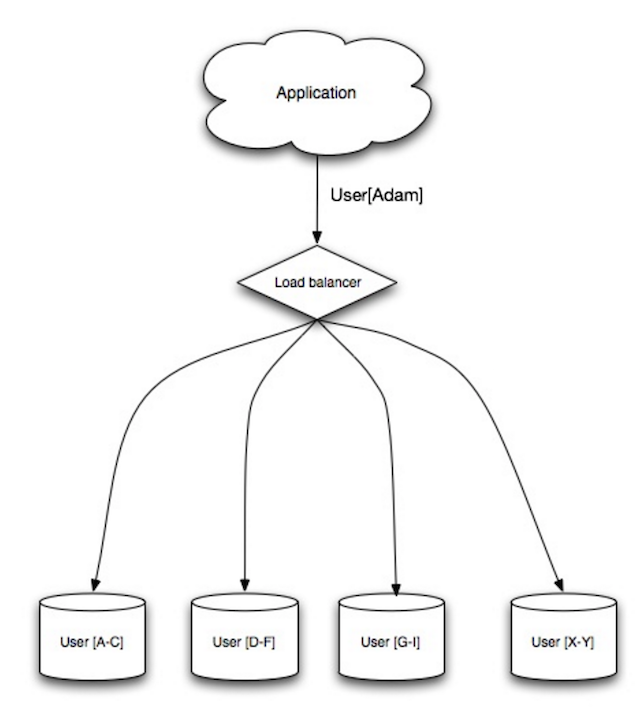
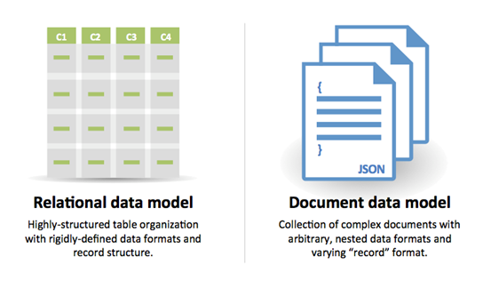

Database
Database¶

Source: Scaling up to your first 10 million users
Relational database management system (RDBMS)¶
A relational database like SQL is a collection of data items organized in tables.
ACID is a set of properties of relational database transactions.
- Atomicity - Each transaction is all or nothing
- Consistency - Any transaction will bring the database from one valid state to another
- Isolation - Executing transactions concurrently has the same results as if the transactions were executed serially
- Durability - Once a transaction has been committed, it will remain so
There are many techniques to scale a relational database: master-slave replication, master-master replication, federation, sharding, denormalization, and SQL tuning.
Master-slave replication¶
The master serves reads and writes, replicating writes to one or more slaves, which serve only reads. Slaves can also replicate to additional slaves in a tree-like fashion. If the master goes offline, the system can continue to operate in read-only mode until a slave is promoted to a master or a new master is provisioned.

Source: Scalability, availability, stability, patterns
Disadvantage(s): master-slave replication¶
- Additional logic is needed to promote a slave to a master.
- See Disadvantage(s): replication for points related to both master-slave and master-master.
Master-master replication¶
Both masters serve reads and writes and coordinate with each other on writes. If either master goes down, the system can continue to operate with both reads and writes.

Source: Scalability, availability, stability, patterns
Disadvantage(s): master-master replication¶
- You'll need a load balancer or you'll need to make changes to your application logic to determine where to write.
- Most master-master systems are either loosely consistent (violating ACID) or have increased write latency due to synchronization.
- Conflict resolution comes more into play as more write nodes are added and as latency increases.
- See Disadvantage(s): replication for points related to both master-slave and master-master.
Disadvantage(s): replication¶
- There is a potential for loss of data if the master fails before any newly written data can be replicated to other nodes.
- Writes are replayed to the read replicas. If there are a lot of writes, the read replicas can get bogged down with replaying writes and can't do as many reads.
- The more read slaves, the more you have to replicate, which leads to greater replication lag.
- On some systems, writing to the master can spawn multiple threads to write in parallel, whereas read replicas only support writing sequentially with a single thread.
- Replication adds more hardware and additional complexity.
Source(s) and further reading: replication¶
Federation¶

Source: Scaling up to your first 10 million users
Federation (or functional partitioning) splits up databases by function. For example, instead of a single, monolithic database, you could have three databases: forums, users, and products, resulting in less read and write traffic to each database and therefore less replication lag. Smaller databases result in more data that can fit in memory, which in turn results in more cache hits due to improved cache locality. With no single central master serializing writes you can write in parallel, increasing throughput.
Disadvantage(s): federation¶
- Federation is not effective if your schema requires huge functions or tables.
- You'll need to update your application logic to determine which database to read and write.
- Joining data from two databases is more complex with a server link.
- Federation adds more hardware and additional complexity.
Source(s) and further reading: federation¶
Sharding¶

Source: Scalability, availability, stability, patterns
Sharding distributes data across different databases such that each database can only manage a subset of the data. Taking a users database as an example, as the number of users increases, more shards are added to the cluster.
Similar to the advantages of federation, sharding results in less read and write traffic, less replication, and more cache hits. Index size is also reduced, which generally improves performance with faster queries. If one shard goes down, the other shards are still operational, although you'll want to add some form of replication to avoid data loss. Like federation, there is no single central master serializing writes, allowing you to write in parallel with increased throughput.
Common ways to shard a table of users is either through the user's last name initial or the user's geographic location.
Disadvantage(s): sharding¶
- You'll need to update your application logic to work with shards, which could result in complex SQL queries.
- Data distribution can become lopsided in a shard. For example, a set of power users on a shard could result in increased load to that shard compared to others.
- Rebalancing adds additional complexity. A sharding function based on consistent hashing can reduce the amount of transferred data.
- Joining data from multiple shards is more complex.
- Sharding adds more hardware and additional complexity.
Source(s) and further reading: sharding¶
Denormalization¶
Denormalization attempts to improve read performance at the expense of some write performance. Redundant copies of the data are written in multiple tables to avoid expensive joins. Some RDBMS such as PostgreSQL and Oracle support materialized views which handle the work of storing redundant information and keeping redundant copies consistent.
Once data becomes distributed with techniques such as federation and sharding, managing joins across data centers further increases complexity. Denormalization might circumvent the need for such complex joins.
In most systems, reads can heavily outnumber writes 100:1 or even 1000:1. A read resulting in a complex database join can be very expensive, spending a significant amount of time on disk operations.
Disadvantage(s): denormalization¶
- Data is duplicated.
- Constraints can help redundant copies of information stay in sync, which increases complexity of the database design.
- A denormalized database under heavy write load might perform worse than its normalized counterpart.
Source(s) and further reading: denormalization¶
SQL tuning¶
SQL tuning is a broad topic and many books have been written as reference.
It's important to benchmark and profile to simulate and uncover bottlenecks.
- Benchmark - Simulate high-load situations with tools such as ab.
- Profile - Enable tools such as the slow query log to help track performance issues.
Benchmarking and profiling might point you to the following optimizations.
Tighten up the schema¶
- MySQL dumps to disk in contiguous blocks for fast access.
- In some old databases it was better to use
CHARinstead ofVARCHARfor fixed-length fields. In those systemsCHAReffectively allowed for fast, random access, whereas withVARCHAR, the system had to find the end of a string before moving onto the next one. But im most modern DB not only that this is not true, but more over it sometimes the opposite, e.g. [Postgresql tip on datatype]https://www.postgresql.org/docs/current/datatype-character.html - Use
TEXTfor large blocks of text such as blog posts.TEXTalso allows for boolean searches. Using aTEXTfield results in storing a pointer on disk that is used to locate the text block. - Use
INTfor larger numbers up to 2^32 or 4 billion. - Use
DECIMALfor currency to avoid floating point representation errors. - Avoid storing large
BLOBS, store the location of where to get the object instead. VARCHAR(255)is the largest number of characters that can be counted in an 8 bit number, often maximizing the use of a byte in some RDBMS.- Set the
NOT NULLconstraint where applicable to improve search performance.
Use good indices¶
- Columns that you are querying (
SELECT,GROUP BY,ORDER BY,JOIN) could be faster with indices. - Indices are usually represented as self-balancing B-tree that keeps data sorted and allows searches, sequential access, insertions, and deletions in logarithmic time.
- Placing an index can keep the data in memory, requiring more space.
- Writes could also be slower since the index also needs to be updated.
- When loading large amounts of data, it might be faster to disable indices, load the data, then rebuild the indices.
Avoid expensive joins¶
- Denormalize where performance demands it.
Partition tables¶
- Break up a table by putting hot spots in a separate table to help keep it in memory.
Tune the query cache¶
- In some cases, the query cache could lead to performance issues.
Source(s) and further reading: SQL tuning¶
- Tips for optimizing MySQL queries
- Is there a good reason i see VARCHAR(255) used so often?
- How do null values affect performance?
- Slow query log
NoSQL¶
NoSQL is a collection of data items represented in a key-value store, document store, wide column store, or a graph database. Data is denormalized, and joins are generally done in the application code. Most NoSQL stores lack true ACID transactions and favor eventual consistency.
BASE is often used to describe the properties of NoSQL databases. In comparison with the CAP Theorem, BASE chooses availability over consistency.
- Basically available - the system guarantees availability.
- Soft state - the state of the system may change over time, even without input.
- Eventual consistency - the system will become consistent over a period of time, given that the system doesn't receive input during that period.
In addition to choosing between SQL or NoSQL, it is helpful to understand which type of NoSQL database best fits your use case(s). We'll review key-value stores, document stores, wide column stores, and graph databases in the next section.
Key-value store¶
Abstraction: hash table
A key-value store generally allows for O(1) reads and writes and is often backed by memory or SSD. Data stores can maintain keys in lexicographic order, allowing efficient retrieval of key ranges. Key-value stores can allow for storing of metadata with a value.
Key-value stores provide high performance and are often used for simple data models or for rapidly-changing data, such as an in-memory cache layer. Since they offer only a limited set of operations, complexity is shifted to the application layer if additional operations are needed.
A key-value store is the basis for more complex systems such as a document store, and in some cases, a graph database.
Source(s) and further reading: key-value store¶
Document store¶
Abstraction: key-value store with documents stored as values
A document store is centered around documents (XML, JSON, binary, etc), where a document stores all information for a given object. Document stores provide APIs or a query language to query based on the internal structure of the document itself. Note, many key-value stores include features for working with a value's metadata, blurring the lines between these two storage types.
Based on the underlying implementation, documents are organized by collections, tags, metadata, or directories. Although documents can be organized or grouped together, documents may have fields that are completely different from each other.
Some document stores like MongoDB and CouchDB also provide a SQL-like language to perform complex queries. DynamoDB supports both key-values and documents.
Document stores provide high flexibility and are often used for working with occasionally changing data.
Source(s) and further reading: document store¶
Wide column store¶

Source: SQL & NoSQL, a brief history
Abstraction: nested map
ColumnFamily<RowKey, Columns<ColKey, Value, Timestamp>>
A wide column store's basic unit of data is a column (name/value pair). A column can be grouped in column families (analogous to a SQL table). Super column families further group column families. You can access each column independently with a row key, and columns with the same row key form a row. Each value contains a timestamp for versioning and for conflict resolution.
Google introduced Bigtable as the first wide column store, which influenced the open-source HBase often-used in the Hadoop ecosystem, and Cassandra from Facebook. Stores such as BigTable, HBase, and Cassandra maintain keys in lexicographic order, allowing efficient retrieval of selective key ranges.
Wide column stores offer high availability and high scalability. They are often used for very large data sets.
Source(s) and further reading: wide column store¶
Graph database¶

{kind=link}
Abstraction: graph
In a graph database, each node is a record and each arc is a relationship between two nodes. Graph databases are optimized to represent complex relationships with many foreign keys or many-to-many relationships.
Graphs databases offer high performance for data models with complex relationships, such as a social network. They are relatively new and are not yet widely-used; it might be more difficult to find development tools and resources. Many graphs can only be accessed with REST APIs.
Source(s) and further reading: graph¶
Source(s) and further reading: NoSQL¶
- Explanation of base terminology
- NoSQL databases a survey and decision guidance
- Scalability
- Introduction to NoSQL
- NoSQL patterns
SQL or NoSQL¶

Source: Transitioning from RDBMS to NoSQL
Reasons for SQL:
- Structured data
- Strict schema
- Relational data
- Need for complex joins
- Transactions
- Clear patterns for scaling
- More established: developers, community, code, tools, etc
- Lookups by index are very fast
Reasons for NoSQL:
- Semi-structured data
- Dynamic or flexible schema
- Non-relational data
- No need for complex joins
- Store many TB (or PB) of data
- Very data intensive workload
- Very high throughput for IOPS
Sample data well-suited for NoSQL:
- Rapid ingest of clickstream and log data
- Leaderboard or scoring data
- Temporary data, such as a shopping cart
- Frequently accessed ('hot') tables
- Metadata/lookup tables